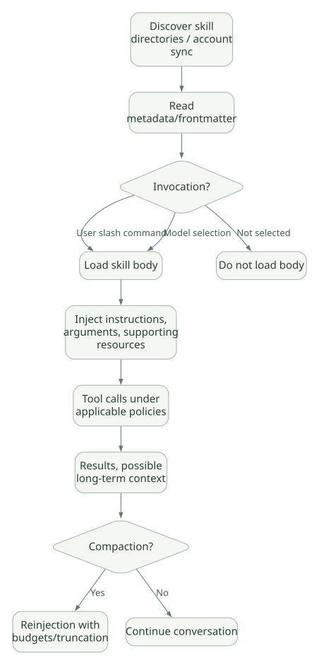

SECOND STUDY / Skills·MCP·Plugin·Tool
Skills·MCP·Plugin·Tool
이번 단원의 읽는 관점
절차 선택과 외부 기능 실행·배포, Tool 전후 Hook 효력을 연결합니다.
살펴볼 경계모든 파일 입력이 Read Tool을 거치는 것은 아니라는 조건을 확인하세요.
이 페이지의 세부 목차
Part IV. Skills·Tools·MCP·Plugin의 실제 확장 경계
16. Skill은 단순 Prompt가 아니라 선택·로딩·실행 수명주기를 가진다#
Claude Code의 Skill은 재사용 가능한 지침과 관련 자산의 패키지다. 대표적으로 .claude/skills/<name>/SKILL.md, 추가 참조 파일, 스크립트를 구성한다. 그러나 Tool과 달리 Skill 문서 자체가 코드 실행 능력을 제공하지는 않는다. 해당 Skill을 읽고 허용된 Tool을 통해 작업하도록 모델에 맥락을 제공한다. DOC
16.1 수명주기 다이어그램#
가로로 이동해서 읽을 수 있습니다. 도식 크게 보기 ↗

원문의 학습용 도식입니다. 연결 방향·분기 조건·점선·쌍방향 연결을 보존해 세로로 배치했습니다. 실제 구현·의사코드·해석의 구분은 본문을 함께 읽으세요.
도식 원문 보기 (Mermaid)
flowchart TD
A[Discover skill directories / account sync] --> B[Read metadata/frontmatter]
B --> C{Invocation?}
C -->|User slash command| D[Load skill body]
C -->|Model selection| D
C -->|Not selected| X[Do not load body]
D --> E[Inject instructions, arguments, supporting resources]
E --> F[Tool calls under applicable policies]
F --> G[Results, possible long-term context]
G --> H{Compaction?}
H -->|Yes| I[Reinjection with budgets/truncation]
H -->|No| J[Continue conversation]주의: 이 그림은 공개 동작을 합친 개념 모델이다. Skill 선택을 위한 내부 scoring function이나 embedding ranking 코드를 공개 소스에서 확인한 것은 아니다. [UNV]
16.2 Skill 문서와 Tool 허용을 구분#
SKILL.md frontmatter에는 설명, 호출 방식, 추가 파일, 인자 사용 방식, Tool 관련 설정 등이 들어갈 수 있다. Skill 본문에는 따라야 할 작업 절차가 담기지만, allowed-tools는 그 Skill이 호출되는 턴의 승인 행동에 영향을 주는 설정이지, Tool 집합을 한정하는 보안 샌드박스가 아니다. 나열되지 않은 도구도 여전히 호출을 시도할 수 있으며 별도 권한 정책이 적용된다. DOC
---
name: data-audit
description: Validate provenance and units before reporting numerical results
---
# Data audit (교육용 절차 설명)
1. Identify input schema and units.
2. Record data provenance.
3. Separate calculations from interpretation.
4. Flag missing data; never fill silently.위 YAML은 절차가 어디에 들어가는지 보여주는 교육용 예시다. 문서의 해당 기능 스키마와 버전에서 정확한 지원 필드·값은 별도 확인해야 한다. 실행 가능한 Skill 데모가 아니다.
16.3 Skill 생성과 자체 개선을 과대해석하지 않기#
Skill을 만들 수 있다는 기능은 보통 파일을 만들고 지침을 저장할 수 있다는 뜻이다. 스킬의 효용을 보장하는 자동 평가 알고리즘이나 검증된 지식을 스스로 획득하는 메커니즘과는 별개다. 자동 생성 Skill이 오래된 코드 예제를 반복하거나 강한 권한을 유도하면 오히려 오류를 확대한다.
자체 Framework를 설계한다면 Skill 관리자를 다음 네 책임으로 나누는 것이 타당하다. [INF]
| 컴포넌트 | 책임 | 실패할 때 발생하는 일 |
|---|---|---|
| Discovery | 관련 Skill 탐색 및 명칭 충돌 정리 | 필요한 Skill을 못 찾거나 다른 Skill 선택 |
| Loader | 메타데이터·본문·참조자료 주입 | 지나친 Token 사용, 잘린 규칙 |
| Validator | 파일 구조, 코드 실행 권한, 신뢰성 검토 | 악성/부정확 Skill 통과 |
| Registry/Versioner | 변경 이력, 잠금, 롤백 | 테스트된 Skill과 실제 사용하는 Skill 불일치 |
17. Skill의 점진적 로딩과 실제 Context 비용#
Skill을 모두 System Prompt에 미리 넣는 방식은 긴 목록일수록 낭비가 커진다. Claude Code는 Skill을 발견한 뒤 선택 시점에 상세 내용과 관련 자료를 로딩하고, 큰 Skill은 컨텍스트 제한에 따라 잘라낼 수 있다. 공식 문서는 오래 사용한 Skill의 내용이 압축 뒤 Budget 한도에 의해 제외될 가능성도 명시한다. DOC[R10]
핵심 설계 질문: Skill의 이름·설명이 정확히 어떤 식으로 모델에 제시되는가? 파일을 처음부터 모두 노출하는가? 필요한 하위 자료는 누가 결정하여 읽는가? 의존 실행 스크립트를 모델이 자동으로 신뢰할 수 있는가?
이에 대한 답은 사용 가능한 기능 계약과 비공개 모델 선택 정책으로 나눠야 한다. Tool 등록 방식이 공개되지 않은 부분을 자체 점수식으로 상상해서 채워서는 안 된다.
18. MCP를 사용하면 무엇이 실제로 실행되나?#
MCP는 Claude Code 외부의 서버가 Tool·Resource·Prompt 같은 능력을 표준 프로토콜을 통해 제공하는 인터페이스다. Claude Code는 Client가 되어 서버의 Tool을 발견·호출하고 응답을 받아 대화에 전달한다. MCP 서버의 프로세스·권한·데이터 액세스는 Claude Code 실행 엔진과 분리될 수 있다. DOC
| 순서 | 보내는 쪽 → 받는 쪽 | 호출 내용·조건 |
|---|---|---|
| 1 | Claude Code → MCP Server | connect/initialize |
| 2 | MCP Server ⇢ Claude Code | available tools/resources |
| 3 | Claude Code → MCP Server | call_tool(name, arguments) |
| 4 | MCP Server → Backend API / DB | backend request under server credentials |
| 5 | Backend API / DB ⇢ MCP Server | result/error |
| 6 | MCP Server ⇢ Claude Code | MCP tool result |
| 7 | Claude Code → Claude Code | include observation in conversation |
원문의 학습용 도식입니다. 호출 방향과 반복·분기·참고를 순서표로 보존했습니다. 실선 →와 점선 ⇢를 구분합니다. 실제 구현·의사코드·해석의 구분은 본문을 함께 읽으세요.
도식 원문 보기 (Mermaid)
sequenceDiagram
participant C as Claude Code
participant S as MCP Server
participant B as Backend API / DB
C->>S: connect/initialize
S-->>C: available tools/resources
C->>S: call_tool(name, arguments)
S->>B: backend request under server credentials
B-->>S: result/error
S-->>C: MCP tool result
C->>C: include observation in conversationstdio·원격 HTTP·WebSocket 등의 지원·제한은 버전·서버 형식에 따라 달라진다. MCP = 항상 별도의 로컬 프로세스라는 설명은 틀리다. 원격 서버도 사용할 수 있다. DOC
18.1 Tool 정의와 실행은 다른 보안 경계#
모델이 보는 Tool Schema는 호출 인자를 생성하는 데 도움을 줄 뿐, 실제 DB의 DELETE 권한을 차단하지 않는다. MCP 서버 내부의 인증·인가·Rate Limit·SQL 검증·Network ACL이 별도로 필요하다.
Tool not available과 Permission denied도 구분해야 한다. 전자는 서버 연결·발견·도구 정의의 문제일 수 있고, 후자는 노출된 호출을 정책적으로 거부한 상황이다.
18.2 Dynamic Tool Update와 캐시#
MCP 서버가 새 Tool을 발표하거나 재연결한 경우, 해당 Tool 정의가 전부 선행 Prefix에 포함되는지, Tool Search를 통해 지연 로드되는지에 따라 캐시 영향이 달라진다. 공식 문서는 의도적으로 Tool을 제거하는 상황, 단순 원격 연결 유실, 백그라운드 재연결을 별도로 설명한다. DOC[R11]
따라서 MCP 서버를 하나 더 연결하면 매번 전체 캐시가 깨진다도, Tool Search를 쓰면 변화와 무관하게 절대 캐시가 깨지지 않는다도 과장이다.
19. Plugin은 MCP의 다른 이름이 아니다#
Plugin은 설치·배포·조합 단위, MCP는 외부 시스템과의 통신 프로토콜/인터페이스, Skill은 작업 절차, Hook은 정해진 이벤트에 대한 실행 정책/자동화, Subagent는 별도 Agent 작업 컨텍스트이다. Plugin 하나 안에 Skill·Hook·MCP 설정·Subagent 정의 등이 함께 들어갈 수 있다. DOC[R11][R12]
| 비교 축 | Skill | MCP Server | Plugin | Hook | Subagent |
|---|---|---|---|---|---|
| 주 역할 | 절차 지식 | 외부 기능 호출 | 기능 패키징 | 이벤트 자동 처리 | 별도 Agent 작업 |
| 실행 주체 | 모델+Tool | 서버/백엔드 | 포함 요소에 따름 | Handler 실행기 | 독립 Model Loop |
| 상태 소유 | 파일/대화 | 외부 서비스 | 배포·설정 | 입력·출력 및 설정 | 별도 Session/Context |
| 보안 위험 | Prompt Injection·부정확 절차 | API 권한·데이터 유출 | 공급망·플러그인 권한 | 정책 우회·실패 모드 | 위임 범위·작업 충돌 |
| 성능 비용 | Context/선택 비용 | 통신·Tool 처리 | 구성요소별 | Handler 지연 | 추가 모델 호출·컨텍스트 |
20. Tool 호출의 논리적 생명주기#
Model: tool_use(name, arguments)
-> Tool name/definition available?
-> Schema/argument processing
-> Permission/mode/deny/allow/sandbox/hook checks
-> (when necessary) user approval / host callback
-> Tool backend execution
-> Tool result/error formatting
-> Append observation and optionally trace
-> Next model invocation위 순서는 논리적으로 반드시 존재할 기능들을 표현한 것이지, 각 검사의 실제 내부 절대 호출 순서를 제공하는 공개 코드가 있는 것은 아니다. 특히 Hook이 인자를 갱신하는 경우 updatedInput의 검증·권한 재평가가 어떤 정책을 거치는지 공식 문서의 권한 우선순위 설명으로 확인해야 한다. DOC[R08]
20.1 Hook 전후의 바인딩 문제#
만약 먼저 승인한 인자와 실제 실행하는 인자가 달라진다면, 공격자는 승인 뒤 경로 또는 명령을 바꿔 보안 의도를 우회할 수 있다. 따라서 개발자는 다음 계약을 명시해야 한다. [INF]
- 승인 요청에 사용한 Tool name/arguments를 영속 ID 또는 Hash로 묶는다.
- 인자가 변경되면 필요한 권한 판단을 다시 한다.
- Shell의 합성 명령·간접 파일 접근·symlink 해석을 자체 문자열 필터로만 판단하지 않는다.
- 비동기 Tool 실행 후 Permission을 회수해도 이미 시작된 작업의 부작용은 남을 수 있다.